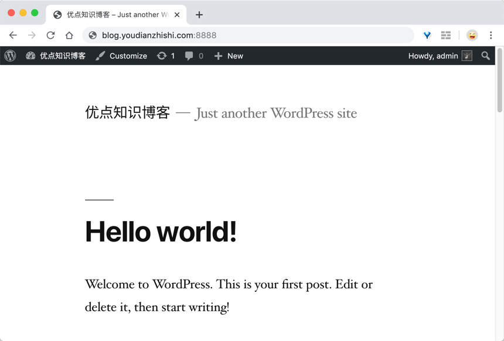

Dockerfile 实践¶
使用 Dockerfile 的一些最佳实践
在前文中我们了解到了用于构建 Dockerfile 的基本方法，但是由于在编写 Dockerfile 的时候并没有一些强制要求，导致很多构建的镜像不符合一些最佳实践，典型的就是镜像构建的层数非常多，对一些基本指令的区别不是很清楚。本节主要介绍 Dockerfile 在实际使用中的一些最佳的实践方式。
第一个是前面重点提到的构建上下文，这个一定需要理解，然后是对于一些不需要提交构建的文件用.dockerignore来进行忽略。
构建缓存¶
在镜像的构建过程中，Docker 根据 Dockerfile 指定的顺序执行每个指令。在执行每条指令之前，Docker 都会在缓存中查找是否已经存在可重用的镜像，如果有就使用现存的镜像，不再重复创建。当然如果你不想在构建过程中使用缓存，你可以在 docker build 命令中使用 --no-cache=true 选项。Docker 中构建缓存遵循的基本规则如下：
- 从一个基础镜像开始（FROM 指令指定），下一条指令将和该基础镜像的所有子镜像进行匹配，检查这些子镜像被创建时使用的指令是否和被检查的指令完全一样。如果不是，则缓存失效。
- 对于 ADD 和 COPY 指令，镜像中对应文件的内容也会被检查，每个文件都会计算出一个校验值。在缓存的查找过程中，会将这些校验和已存在镜像中的文件校验值进行对比。如果文件有任何改变，则缓存失效。
- 除了 ADD 和 COPY 指令，缓存匹配过程不会查看临时容器中的文件来决定缓存是否匹配。例如，当执行完
RUN apt-get -y update指令后，容器中一些文件被更新，但 Docker 不会检查这些文件。这种情况下，只有指令字符串本身被用来匹配缓存。 - 一旦缓存失效，所有后续的 Dockerfile 指令都将产生新的镜像，缓存不会被使用。
使用多阶段构建¶
多阶段构建可以让我们大幅度减小最终的镜像大小，而不需要去想办法减少中间层和文件的数量。因为镜像是在生成过程的最后阶段生成的，所以可以利用生成缓存来最小化镜像层。
例如，如果你的构建包含多个层，则可以将它们从变化频率较低（以确保生成缓存可重用）到变化频率较高的顺序排序：
- 安装构建应用程序所需的依赖工具
- 安装或更新依赖项
- 构建你的应用
比如我们构建一个 Go 应用程序的 Dockerfile 可能类似于这样：
FROM golang:1.11-alpine AS build
# 安装项目需要的工具
# 运行 `docker build --no-cache .` 来更新依赖
RUN apk add --no-cache git
RUN go get github.com/golang/dep/cmd/dep
# 通过 Gopkg.toml 和 Gopkg.lock 获取项目的依赖
# 仅在更新 Gopkg 文件时才重新构建这些层
COPY Gopkg.lock Gopkg.toml /go/src/project/
WORKDIR /go/src/project/
# 安装依赖库
RUN dep ensure -vendor-only
# 拷贝整个项目进行构建
# 当项目下面有文件变化的时候该层才会重新构建
COPY . /go/src/project/
RUN go build -o /bin/project
# 将打包后的二进制文件拷贝到 scratch 镜像下面，将镜像大小降到最低
FROM scratch
COPY --from=build /bin/project /bin/project
ENTRYPOINT ["/bin/project"]
CMD ["--help"]避免安装不必要的包¶
为了降低复杂性、减少依赖、减小文件大小和构建时间，应该避免安装额外的或者不必要的软件包。例如，不要在数据库镜像中包含一个文本编辑器。
应用解耦¶
每个容器应用只关心一个方面的事情。将多个应用解耦到不同容器中，可以更轻松地保证容器的横向扩展和复用。例如一个 web 应用程序可能包含三个独立的容器：web应用、数据库、缓存，每个容器都是独立的镜像，分开运行。但这并不是说一个容器就只能跑一个进程，因为有的程序可能会自行产生其他进程，比如 Celery 就可以有很多个工作进程。虽然每个容器跑一个进程是一条很好的法则，但这并不是一条硬性的规定。我们主要是希望一个容器只关注一件事情，尽量保持干净和模块化。
如果容器互相依赖，你可以使用 Docker 容器网络 来把这些容器连接起来，我们前面已经跟大家讲解过 Docker 的容器网络模式。
最小化镜像层数¶
在很早之前的版本中尽量减少镜像层数是非常重要的，不过现在的版本已经有了一定的改善了：
- 只有 RUN、COPY 和 ADD 指令会创建层，其他指令会创建临时的中间镜像，但是不会直接增加构建的镜像大小了。
- 多阶段构建的支持，允许我们把需要的数据直接复制到最终的镜像中，这就允许我们在中间阶段包含一些工具或者调试信息了，而且不会增加最终的镜像大小。
对多行参数排序¶
只要有可能，就将多行参数按字母顺序排序。这可以帮助你避免重复包含同一个包，更新包列表时也更容易，也更容易阅读和审查。建议在反斜杠符号 \ 之前添加一个空格，可以增加可读性。比如下面的例子：
RUN apt-get update && apt-get install -y \
bzr \
cvs \
git \
mercurial \
subversionDockerfile 指令¶
关于这些指令的使用建议可以帮助我们创建高效且可维护的 Dockerfile。
FROM 指令¶
前面已经介绍过，尽可能使用当前的官方镜像作为基础镜像。我们建议使用Alpine映像，因为它受到严格控制且较小（当前小于5 MB），同时仍是完整的 Linux 发行版。
LABEL 标签¶
你可以给镜像添加标签来帮助组织镜像、记录许可信息、辅助自动化构建等。每个标签一行，由 LABEL 开头加上一个或多个标签对。
下面的示例展示了各种不同的可能格式。#开头的行是注释内容。
注意
如果你的字符串包含空格，那么它必须被引用或者空格必须被转义。如果您的字符串包含内部引号字符（"），则也可以将其转义。
# Set one or more individual labels
LABEL com.example.version="0.0.1-beta"
LABEL vendor="ACME Incorporated"
LABEL com.example.release-date="2015-02-12"
LABEL com.example.version.is-production=""一个镜像可以包含多个标签，当然以上内容也可以写成下面这样，但是不是必须的：
# Set multiple labels at once, using line-continuation characters to break long lines
LABEL vendor=ACME\ Incorporated \
com.example.is-production="" \
com.example.version="0.0.1-beta" \
com.example.release-date="2015-02-12"RUN 指令¶
为了保持 Dockerfile 文件的可读性，以及可维护性，建议将长的或复杂的 RUN 指令用反斜杠\分割成多行。
RUN 指令最常见的用法是安装包用的 apt-get。因为RUN apt-get指令会安装包，所以有几个问题需要注意。
- 不要使用 RUN apt-get upgrade 或 dist-upgrade，如果基础镜像中的某个包过时了，你应该联系它的维护者。如果你确定某个特定的包，比如 foo，需要升级，使用 apt-get install -y foo 就行，该指令会自动升级 foo 包。
- 永远将 RUN apt-get update 和 apt-get install 组合成一条 RUN 声明，例如：
RUN apt-get update && apt-get install -y \ package-bar \ package-baz \ package-foo
将 apt-get update 放在一条单独的 RUN 声明中会导致缓存问题以及后续的 apt-get install 失败。比如，假设你有一个 Dockerfile 文件：
FROM ubuntu:14.04
RUN apt-get update
RUN apt-get install -y curl构建镜像后，所有的层都在 Docker 的缓存中。假设你后来又修改了其中的 apt-get install 添加了一个包：
FROM ubuntu:14.04
RUN apt-get update
RUN apt-get install -y curl nginxDocker 发现修改后的 RUN apt-get update 指令和之前的完全一样。所以，apt-get update 不会执行，而是使用之前的缓存镜像。因为 apt-get update 没有运行，后面的 apt-get install 可能安装的是过时的 curl 和 nginx 版本。
使用RUN apt-get update && apt-get install -y可以确保你的 Dockerfiles 每次安装的都是包的最新的版本，而且这个过程不需要进一步的编码或额外干预。这项技术叫作cache busting(缓存破坏)。
下面是一个 RUN 指令的示例模板，展示了所有关于 apt-get 的建议：
RUN apt-get update && apt-get install -y \
aufs-tools \
automake \
build-essential \
curl \
dpkg-sig \
libcap-dev \
libsqlite3-dev \
mercurial \
reprepro \
ruby1.9.1 \
ruby1.9.1-dev \
s3cmd=1.1.* \
# 其他操作
&& rm -rf /var/lib/apt/lists/*其中 s3cmd 指令指定了一个版本号 1.1.*。如果之前的镜像使用的是更旧的版本，指定新的版本会导致 apt-get udpate 缓存失效并确保安装的是新版本。 另外，清理掉 apt 缓存 var/lib/apt/lists 可以减小镜像大小。因为 RUN 指令的开头为 apt-get udpate，包缓存总是会在 apt-get install 之前刷新。
EXPOSE 指令¶
EXPOSE 指令用于指定容器将要监听的端口。因此，你应该为你的应用程序使用常见的端口。
例如，提供 Apache web 服务的镜像应该使用 EXPOSE 80，而提供 MongoDB 服务的镜像使用 EXPOSE 27017。
对于外部访问，用户可以在执行 docker run 时使用一个 -p 参数来指示如何将指定的端口映射到所选择的端口。
ENV 指令¶
为了方便新程序运行，你可以使用 ENV 指令来为容器中安装的程序更新 PATH 环境变量。例如使用ENV PATH /usr/local/nginx/bin:$PATH 来确保CMD ["nginx"]能正确运行。
ENV 指令也可用于为你想要容器化的服务提供必要的环境变量，比如 Postgres 需要的 PGDATA。 最后，ENV 也能用于设置常见的版本号，比如下面的示例：
ENV PG_MAJOR 9.3
ENV PG_VERSION 9.3.4
RUN curl -SL http://example.com/postgres-$PG_VERSION.tar.xz | tar -xJC /usr/src/postgress && …
ENV PATH /usr/local/postgres-$PG_MAJOR/bin:$PATH类似于程序中的常量，这种方法可以让你只需改变 ENV 指令来自动的改变容器中的软件版本。
VOLUME 指令¶
VOLUME 指令用于暴露任何数据库存储文件，配置文件，或容器创建的文件和目录。强烈建议使用 VOLUME 来管理镜像中的可变部分和用户可以改变的部分。
USER 指令¶
如果某个服务不需要特权执行，建议使用 USER 指令切换到非 root 用户。先在 Dockerfile 中使用类似 RUN groupadd -r postgres && useradd -r -g postgres postgres 的指令创建用户和用户组。
注意
在镜像中，用户和用户组每次被分配的 UID/GID 都是不确定的，下次重新构建镜像时被分配到的 UID/GID 可能会不一样。如果要依赖确定的 UID/GID，你应该显示的指定一个 UID/GID。
你应该避免使用 sudo，因为它不可预期的 TTY 和信号转发行为可能造成的问题比它能解决的问题还多。如果你真的需要和 sudo 类似的功能（例如，以 root 权限初始化某个守护进程，以非 root 权限执行它），你可以使用 gosu。我们可以去查看官方的一些镜像，很多都是使用的 gosu。
为了减少层数和复杂度，避免频繁地使用 USER 来回切换用户。
WORKDIR 指令¶
为了清晰性和可靠性，你应该总是在 WORKDIR 中使用绝对路径。另外，你应该使用 WORKDIR 来替代类似于 RUN cd ... && do-something 的指令，后者难以阅读、排错和维护。
COPY 和 ADD 指令¶
虽然 ADD 和 COPY 功能类似，但一般优先使用 COPY。因为它比 ADD 更透明。COPY 只支持简单将本地文件拷贝到容器中，而 ADD 有一些并不明显的功能（比如本地 tar 提取和远程 URL 支持）。因此，ADD 的最佳用例是将本地 tar 文件自动提取到镜像中，例如ADD rootfs.tar.xz。
如果你的 Dockerfile 有多个步骤需要使用上下文中不同的文件。单独 COPY 每个文件，而不是一次性的 COPY 所有文件，这将保证每个步骤的构建缓存只在特定的文件变化时失效。例如：
COPY requirements.txt /tmp/
RUN pip install --requirement /tmp/requirements.txt
COPY . /tmp/如果将COPY . /tmp/放置在 RUN 指令之前，只要 . 目录中任何一个文件变化，都会导致后续指令的缓存失效。
为了让镜像尽量小，最好不要使用 ADD 指令从远程 URL 获取包，而是使用 curl 和 wget。这样你可以在文件提取完之后删掉不再需要的文件来避免在镜像中额外添加一层。比如尽量避免下面的用法：
ADD http://example.com/big.tar.xz /usr/src/things/
RUN tar -xJf /usr/src/things/big.tar.xz -C /usr/src/things
RUN make -C /usr/src/things all而是应该使用下面这种方法：
RUN mkdir -p /usr/src/things \
&& curl -SL http://example.com/big.tar.xz \
| tar -xJC /usr/src/things \
&& make -C /usr/src/things all上面使用的管道操作，所以没有中间文件需要删除。对于其他不需要 ADD 的自动提取功能的文件或目录，你应该使用 COPY。
CMD 与 ENTRYPOINT 指令¶
尽管 ENTRYPOINT 和 CMD 都是在容器里执行一条命令, 但是他们有一些微妙的区别，在绝大多数情况下, 你只要在这2者之间选择一个调用就可以，但是我们还是非常有必要来认真了解下二者的区别。
CMD 指令¶
CMD 指令是容器启动以后，默认的执行命令，需要重点理解下这个默认的含义，意思就是如果我们执行 docker run 没有指定任何的执行命令或者 Dockerfile 里面也没有指定 ENTRYPOINT，那么就会使用 CMD 指定的执行命令执行了。这也说明了 ENTRYPOINT 才是容器启动以后真正要执行的命令。
所以我们经常遇到 CMD 会被覆盖 的情况，为什么会被覆盖呢？主要还是因为 CMD 的定位就是默认，如果不额外指定，那么才会执行 CMD 命令，但是如果我们指定了的话那就不会执行 CMD 命令了，也就是说 CMD 会被覆盖。
CMD 总共有三种用法：
CMD ["executable", "param1", "param2"] # exec 形式
CMD ["param1", "param2"] # 作为 ENTRYPOINT 的默认参数
CMD command param1 param2 # shell 形式其中 shell 形式，就是没有中括号的形式，命令 command 默认是在/bin/sh -c下执行的，比如：
FROM busybox
CMD echo "hello cmd shell form!"我们将上面的 Dockerfile 打包成 cmdshell 镜像，然后直接启动一个容器：
$ docker build -t cmdshell .
Sending build context to Docker daemon 2.048kB
Step 1/2 : FROM busybox
---> 020584afccce
Step 2/2 : CMD echo "hello cmd shell form!"
---> Running in 651afaddb83d
Removing intermediate container 651afaddb83d
---> d26e4d6d9cdf
Successfully built d26e4d6d9cdf
Successfully tagged cmdshell:latest
$ docker run cmdshell
hello cmd shell form!对于带有中括号的 exec 形式，命令没有在任何 shell 终端环境下，如果我们要执行 shell，必须把 shell 加入到中括号的参数中。将上面的例子修改为：
FROM busybox
CMD ["/bin/sh", "-c", "echo 'hello cmd exec form!'"]同样将上面的 Dockerfile 打包成 cmdexec 镜像，然后直接启动一个容器：
$ docker build -t cmdexec .
Sending build context to Docker daemon 2.048kB
Step 1/2 : FROM busybox
---> 020584afccce
Step 2/2 : CMD ["/bin/sh", "-c", "echo 'hello cmd exec form!'"]
---> Running in 8c72d5e2ce35
Removing intermediate container 8c72d5e2ce35
---> c393bd1ab3c1
Successfully built c393bd1ab3c1
Successfully tagged cmdexec:latest
$ docker run cmdexec
hello cmd exec form!需要注意，采用 exec 形式，第一个参数必须是命令的全路径才行。一个 Dockerfile 如果有多个 CMD，只有最后一个生效，官网推荐采用这种方式。
当然，以上都是体现了 CMD 的 默认 行为。如果我们在 run 时指定了命令或者有 ENTRYPOINT CMD 就会被覆盖。比如同样用上面两个镜像，在运行的时候指定一个命令：
$ docker run cmdexec echo 'hello docker'
hello docker
$ docker run cmdshell echo 'hello docker'
hello docker可以看到，最终容器里面执行的是 run 命令后面的命令，而不是 CMD 里面定义的。
ENTRYPOINT 指令¶
根据官方定义来说 ENTRYPOINT 才是用于定义容器启动以后的执行程序的，允许将镜像当成命令本身来运行（用 CMD 提供默认选项），从名字也可以理解，是容器的入口。ENTRYPOINT 一共有两种用法：
ENTRYPOINT ["executable", "param1", "param2"] (exec 形式)
ENTRYPOINT command param1 param2 (shell 形式)对应命令行 exec 模式，也就是带中括号的。和 CMD 的中括号形式是一致的，但是这里貌似是在shell的环境下执行的，与cmd有区别。如果 run 命令后面有执行命令，那么后面的全部都会作为 ENTRYPOINT 的参数。如果 run 后面没有额外的命令，但是定义了 CMD，那么 CMD 的全部内容就会作为 ENTRYPOINT 的参数，这同时是上面我们提到的 CMD 的第二种用法。所以说 ENTRYPOINT 不会被覆盖。当然如果要在 run 里面覆盖，也是有办法的，使用--entrypoint参数即可。
比如我们定义如下的 Dockerfile：
FROM busybox
CMD ["I am in cmd exec form"]
ENTRYPOINT ["echo"]将上面的 Dockerfile 打包成镜像 entrypointest，然后直接运行，不带任何参数：
$ docker build -t entrypointest .
Sending build context to Docker daemon 2.048kB
Step 1/3 : FROM busybox
---> 020584afccce
Step 2/3 : CMD ["I am in cmd exec form"]
---> Running in 2d7b13b0dfe7
Removing intermediate container 2d7b13b0dfe7
---> 903d739ead9a
Step 3/3 : ENTRYPOINT ["echo"]
---> Running in c61682ea476e
Removing intermediate container c61682ea476e
---> 00b09a578d48
Successfully built 00b09a578d48
Successfully tagged entrypointest:latest
$ docker run entrypointest
I am in cmd exec form我们可以看到打印的结果是 CMD 里面指定的内容，也就是默认情况将 CMD 部分作为 ENTRYPOINT 的参数了。但是如果我们在运行容器的时候如果指定了运行参数呢：
$ docker run entrypointest I am in run section
I am in run section我们可以看到运行时指定的参数会覆盖掉 CMD 提供的默认参数，但是默认都是执行的 ENTRYPOINT 里面的命令。
对于 shell 模式的，任何 run 和 CMD 的参数都无法被传入到 ENTRYPOINT 里。官网推荐用上面一种用法。比如我们我们这里定义一个 Dockerfile 如下：
FROM busybox
CMD ["I am in cmd exec form and entrypoint shell form"]
ENTRYPOINT echo将上面 Dockerfile 打包成镜像 entrypointshell，然后直接运行：
$ docker build -t entrypointshell .
Sending build context to Docker daemon 2.048kB
Step 1/3 : FROM busybox
---> 020584afccce
Step 2/3 : CMD ["I am in cmd exec form and entrypoint shell form"]
---> Running in 2aee7326f4cd
Removing intermediate container 2aee7326f4cd
---> e89cadeeecd3
Step 3/3 : ENTRYPOINT echo
---> Running in f359c8bb5025
Removing intermediate container f359c8bb5025
---> f9d4e1d1b0a0
Successfully built f9d4e1d1b0a0
Successfully tagged entrypointshell:latest
$ docker run entrypointshell
我们可以发现 CMD 的参数并没有被打印出来，如果在运行的时候添加上参数呢：
$ docker run entrypointshell I am in run section
$我们可以发现也没有将 run 命令后面的参数打印出来。所以一般情况下对于 ENTRYPOINT 来说使用中括号的 exec 形式更好。
总结
一般会用 ENTRYPOINT 的中括号形式作为 Docker 容器启动以后的默认执行命令，里面放的是不变的部分，可变部分比如命令参数可以使用 CMD 的形式提供默认版本，也就是 run 里面没有任何参数时使用的默认参数。如果我们想用默认参数，就直接 run，否则想用其他参数，就 run 里面加上参数。
官方仓库示例¶
这些官方仓库的 Dockerfile 都是参考典范：https://github.com/docker-library/docs。
Wordpress 示例¶
这里我们以创建一个 Wordpress 镜像为例，我们知道默认情况下 Wordpress 是使用 MySQL 数据库的，如果使用 MySQL 数据库的不利于我们这里的演示，所以我们这里用 Sqlite 来作为 Wordpress 的存储数据库，要编写一个使用 Sqlite 数据库的 Wordpress 镜像，首先我们需要明白如果不使用镜像应该怎么来部署这样的一个程序，否则是不可能编写出 Dockerfile 的。
获取 Wordpress¶
首先，我们需要获取到 Wordpress 的程序安装包，地址：https://wordpress.org/download/，下载最新的 Wordpress 安装包。
获取 SQLite 插件¶
由于 Wordpress 默认使用的是 MySQL 数据库，如果要使用 SQLite 数据库的话需要使用 SQLite 插件，地址：https://wordpress.org/plugins/sqlite-integration/
安装激活插件¶
将 SQLite 插件解压放置到 Wordpress 源码目录 wp-content/plugins 目录下面，然后拷贝 sqlite-integration 目录下面的 db.php 文件到 Wordpress 的 wordpress/wp-content 目录下面。
然后重新将 wordpress/wp-config-sample.php 重命名为 wordpress/wp-config.php，可以通过该文件里面的一些参数来配置数据库的名称和位置，默认情况下，数据库名为.ht.sqlite，存储在 wp-content/database/ 目录中。
然后安装上 Wordpress 运行的一些环境比较 PHP、Nginx 就可以运行了，最终的 Dockerfile 如下所示：
FROM nginx:latest
LABEL version="1.0"
LABEL author="阳明 <icnych@gmail.com>"
# 设置成非交互式的
ENV DEBIAN_FRONTEND noninteractive
ENV DOCUMENT_ROOT /usr/share/nginx/html
# 安装 nginx php-fpm php-pdo unzip curl
RUN apt-get update && apt-get -y install \
apt-utils \
curl \
php-fpm \
php-sqlite3 \
unzip
COPY wordpress-5.2.4.tar.gz .
RUN rm -rf ${DOCUMENT_ROOT}/* && \
tar -xzvf wordpress-5.2.4.tar.gz --strip-components=1 --directory ${DOCUMENT_ROOT} && \
rm -rf wordpress-5.2.4.tar.gz
# RUN rm -rf ${DOCUMENT_ROOT}/* && \
# curl -o wordpress.tar.gz https://wordpress.org/latest.tar.gz && \
# tar -xzvf /wordpress.tar.gz --strip-components=1 --directory ${DOCUMENT_ROOT}
COPY sqlite-integration.1.8.1.zip .
RUN unzip sqlite-integration.1.8.1.zip -d ${DOCUMENT_ROOT}/wp-content/plugins/ && \
rm -rf sqlite-integration.1.8.1.zip
# RUN curl -o sqlite-plugin.zip https://downloads.wordpress.org/plugin/sqlite-integration.1.8.1.zip && \
# unzip sqlite-plugin.zip -d ${DOCUMENT_ROOT}/wp-content/plugins/ && \
# rm sqlite-plugin.zip && \
RUN cp ${DOCUMENT_ROOT}/wp-content/plugins/sqlite-integration/db.php ${DOCUMENT_ROOT}/wp-content && \
cp ${DOCUMENT_ROOT}/wp-config-sample.php ${DOCUMENT_ROOT}/wp-config.php
# nginx 配置
RUN sed -i -e"s/keepalive_timeout\s*65/keepalive_timeout 2/" /etc/nginx/nginx.conf \
&& sed -i -e"s/keepalive_timeout 2/keepalive_timeout 2;\n\tclient_max_body_size 10m/" /etc/nginx/nginx.conf \
&& sed -i -e "s|include /etc/nginx/conf.d/\*.conf|include /etc/nginx/sites-enabled/\*|g" /etc/nginx/nginx.conf \
&& echo "daemon off;" >> /etc/nginx/nginx.conf
# php-fpm 配置
# RUN php --ini # 找到fpm配置
RUN sed -i -e "s/;cgi.fix_pathinfo=1/cgi.fix_pathinfo=0/g" /etc/php/7.3/fpm/php.ini \
&& sed -i -e "s/upload_max_filesize\s*=\s*2M/upload_max_filesize = 10M/g" /etc/php/7.3/fpm/php.ini \
&& sed -i -e "s/post_max_size\s*=\s*8M/post_max_size = 10M/g" /etc/php/7.3/fpm/php.ini \
&& sed -i -e "s/;catch_workers_output\s*=\s*yes/catch_workers_output = yes/g" /etc/php/7.3/fpm/pool.d/www.conf \
&& sed -i -e "s/;listen.mode = 0660/listen.mode = 0666/g" /etc/php/7.3/fpm/pool.d/www.conf
COPY nginx.conf /etc/nginx/sites-available/default
RUN chown -R www-data.www-data ${DOCUMENT_ROOT} \
&& mkdir -p /etc/nginx/sites-enabled \
&& ln -s /etc/nginx/sites-available/default /etc/nginx/sites-enabled/default \
&& apt-get purge -y --auto-remove curl unzip
EXPOSE 80
EXPOSE 443
CMD service php7.3-fpm start && nginx由于一些网络原因，我们这里将安装包都放置到了 Dockerfile 目录下面，然后我们就可以来构建镜像：
$ docker build -t cnych/wordpress:sqlite .然后用该镜像来运行一个 Wordpress 容器：
$ docker run -d --name wordpress -p 8888:80 cnych/wordpress:sqlite运行成功后我们就可以通过 8888 端口来访问 Wordpress 应用了，而且我们没有 MySQL 相关的配置，通过一些配置就可以访问到应用了。
